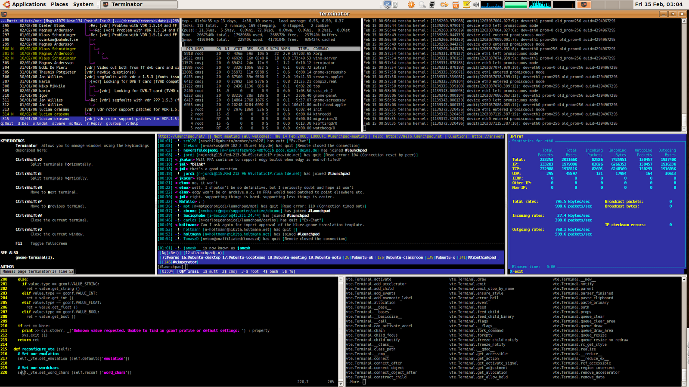
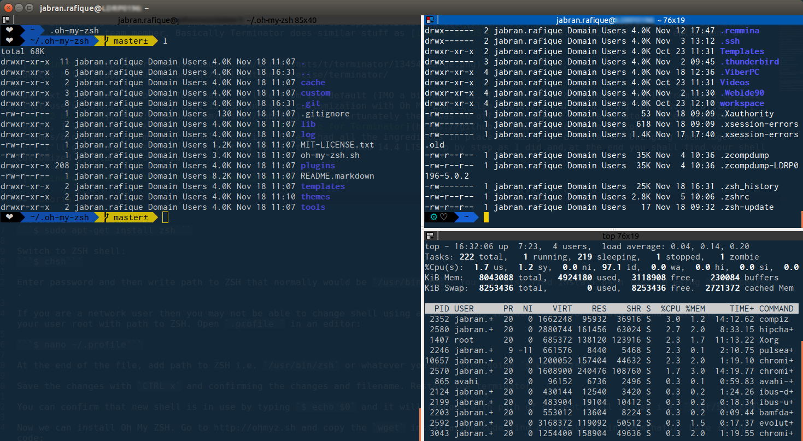

Dev workspace setup on Linux (Ubuntu) with Terminator, Oh My ZSH and Cobalt2
My working environment recently shifted from OS X to Linux after I joined Rated People as Front End Web Developer. The shift came in with switching from personal Macbook Pro to office PC for most of the day work and it runs Ubuntu 14.4 LTS. Therefore one of the very first things were to setup a workspace similar to workspace at my personal machine.
I was introduced to Terminator with some good words about it by Mathew White, a senior team member. Basically Terminator does similar stuff as iTerm2 on OS X as a replacement of default Terminal app.
Source: Gnome Terminator
Now next steps were to bring Terminator to life from its default (IMO a bit dull) UI. This included changing the shell from Bash to some other useful shell that in my case is ZSH and some customization with Oh My ZSH. I also wanted to carry on using the color profile of Cobalt2 by Webos but unfortunately there was no official support for Terminator. After a quick Google search, I landed on Mark Badolato's Cobalt2 config file for Terminator. Once I had all the ingredients in place it was just a matter of bringing them together. Here I'll go through installing and setting up all this on Ubuntu 14.4 LTS step by step as I did and at the end you shall find your shell customized similar to following.
Installation:
Install Terminator (Official guidelines):
$ sudo apt-get install terminatorOpen Terminator and install ZSH shell:
$ sudo apt-get install zshConfirm ZSH global installation path:
$ which zshIt should return path to ZSH i.e. /usr/bin/zsh.
Switch to ZSH shell:
$ chshEnter admin password and then write path to ZSH as confirmed above i.e. /usr/bin/zsh.
If you are a network user or you get the message saying chsh: user '...' does not exist in /etc/passwd then you may not be able to change shell using above method. In such a case, you should append .profile file in your user root with path to ZSH. Open the .profile file in an editor:
$ nano ~/.profileAt the end of the file, add following two lines:
...
# Use ZSH as default shell
/usr/bin/zshSave the changes with CTRL x and confirm changes to file and filename (if any). Restart the Terminator. Now when you launch Terminator again you will see a tilda ~ instead of usual prompt. This confirms that now ZSH is running as soon as you launch the app. You can also confirm the new shell in use by typing $ echo $0 and it will respond with path of current shell in use i.e. /usr/bin/zsh.
Now we can install Oh My ZSH(OMZ). Copy the appropriate command from following, paste it into Terminator and hit enter to download, and install OMZ.
Using cURL:
$ sh -c "$(curl -fsSL https://raw.github.com/robbyrussell/oh-my-zsh/master/tools/install.sh)"Using wget:
$ sh -c "$(wget https://raw.github.com/robbyrussell/oh-my-zsh/master/tools/install.sh -O -)"Once done, Terminator will confirm the successful installation with a OMZ funky message. Next step is to install Cobalt2 theme for OMZ.Naviagte your browser to Wesbos Cobalt2 theme for iTerm2. Select all and copy the text to the clipboard. Create a new OMZ theme file in Terminator:
$ nano ~/.oh-my-zsh/themes/cobalt2.zsh-themePaste the copied text (Ctrl Shift v) and save the changes (Ctrl x). Cobalt2 theme requires Powerline fonts in order to work perfectly. Download the Powerline fonts repo:
$ cd ~/
$ wget -O powerline-fonts.zip https://github.com/powerline/fonts/archive/master.zipUnzip the dowloaded file:
$ unzip powerline-fonts.zipInstall Powerline fonts:
$ bash ./powerline-fonts/install.shRemove installation files:
$ rm -rf powerline-fonts
$ rm powerline-fonts.zipNow last things are to set the color profile for Cobalt2 theme and optionally customize the prompt as you may like. Since there is no default official color profile for Terminator, we will use the color profile configuration by Mark Badolato. Select all text below and copy to clipboard:
[[Cobalt2]]
palette = "#000000:#ff0000:#38de21:#ffe50a:#1460d2:#ff005d:#00bbbb:#bbbbbb:#555555:#f40e17:#3bd01d:#edc809:#5555ff:#ff55ff:#6ae3fa:#ffffff"
background_color = "#132738"
cursor_color = "#f0cc09"
foreground_color = "#ffffff"
background_image = NoneOpen the Terminator config file:
$ nano ~/.config/terminator/configPaste (Ctrl Shift v) all copied text just under the [[default]] block and make sure that it is properly indented using spaces. Save (Ctrl x) the config file, confirm changes and filename to exit the editor. Restart the Terminator and right click anywhere on it to open context menu and select Preferences. In Terminator Preferences dialog box, go to Profiles tab, select Cobalt2 and you have Terminator on Ubuntu 14.4 LTS running with Cobalt2 theme.
Extras: you can make changes to the prompt f.e. I replaced the default cross with a heart shape. To make such changes, you will need to edit Cobalt2 theme file.
$ nano ~/.oh-my-zsh/themes/cobalt2.zsh-themeNow you can have a complete joy of using an eye-catching commmand line.